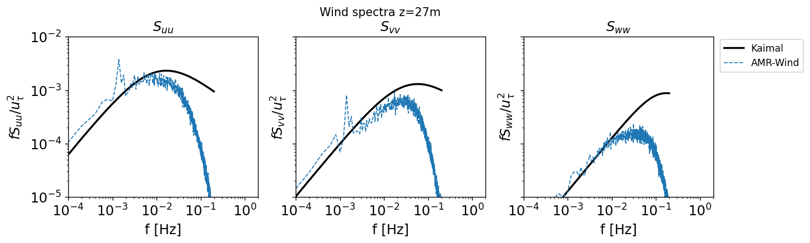
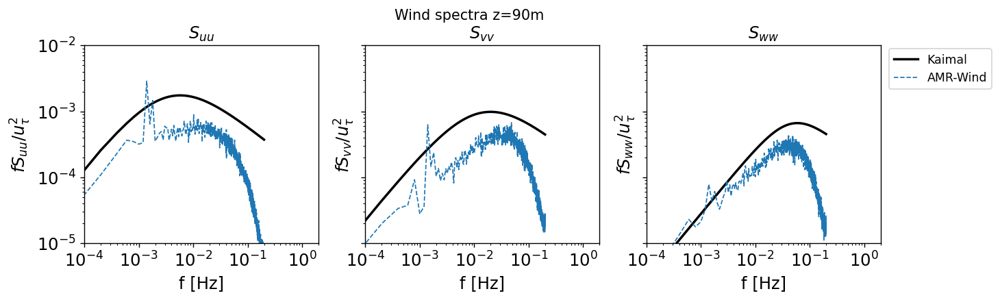

Compute the single-point time spectra
# Add any possible locations of amr-wind-frontend here
amrwindfedirs = ['/projects/wind_uq/lcheung/amrwind-frontend/',
'/ccs/proj/cfd162/lcheung/amrwind-frontend/',
]
import sys, os, shutil, io
import numpy as np
for x in amrwindfedirs: sys.path.insert(1, x)
from functools import partial
import matplotlib.pyplot as plt
import pandas as pd
# Make all plots inline
%matplotlib inline
import postproengine as ppeng
# Load ruamel or pyyaml as needed
try:
import ruamel.yaml
yaml = ruamel.yaml.YAML(typ='unsafe', pure=True)
useruamel=True
loaderkwargs = {'Loader':yaml.RoundTripLoader}
dumperkwargs = {'Dumper':yaml.RoundTripDumper, 'indent':4, 'default_flow_style':False}
Loader=yaml.load
except:
import yaml as yaml
useruamel=False
loaderkwargs = {}
dumperkwargs = {'default_flow_style':False }
Loader=yaml.safe_load
def spectrapoints():
xrange = [0, 100, 200, 300, 400, 500]
yrange = [0, 100, 200, 300, 400, 500]
ptlist = []
for x in xrange:
for y in yrange:
ptlist.append((x, y, 0))
return ptlist
ppeng.spectrapoints = spectrapoints
yamlstring="""
globalattributes:
verbose: False
executeorder:
- windspectra
windspectra:
- name: spectraZ027
ncfile: /gpfs/lcheung/HFM/exawind-benchmarks/convective_abl/post_processing/XYdomain_027_30000.nc
group: Farm_XYdomain027
pointlocationfunction: postproengine.spectrapoints
csvfile: ../results/time_spectra_Z027.csv
kaimal:
ustarsource: ablstatsfile
ablstatsfile: /gpfs/lcheung/HFM/exawind-benchmarks/convective_abl/post_processing/abl_statistics30000.nc
avgt: [15000, 20000]
csvfile: ../results/kaimal_Z027.csv
z: 27.0
- name: spectraZ090
ncfile: /gpfs/lcheung/HFM/exawind-benchmarks/convective_abl/post_processing/XYdomain_090_30000.nc
group: Farm_XYdomain090
pointlocationfunction: postproengine.spectrapoints
csvfile: ../results/time_spectra_Z090.csv
kaimal:
ustarsource: ablstatsfile
ablstatsfile: /gpfs/lcheung/HFM/exawind-benchmarks/convective_abl/post_processing/abl_statistics30000.nc
avgt: [15000, 20000]
csvfile: ../results/kaimal_Z090.csv
z: 90.0
"""
f = io.StringIO(yamlstring)
yamldict = Loader(f, **loaderkwargs)
yamldict['windspectra'][0]['timeindices'] = list(range(10000))[::5]
yamldict['windspectra'][1]['timeindices'] = list(range(10000))[::5]
# Run the driver
ppeng.driver(yamldict, verbose=True)
Initialized windspectra
Running windspectra
[============================================================] 100.0%
Initialized kaimal inside windspectra
Executing kaimal
ustar = 0.4685868615973461
[============================================================] 100.0%
Initialized kaimal inside windspectra
Executing kaimal
ustar = 0.4685868615973461
Load Data
df_27 = pd.read_csv('../results/time_spectra_Z027.csv')
df_90 = pd.read_csv('../results/time_spectra_Z090.csv')
kaimal_27 = pd.read_csv('../results/kaimal_Z027.csv')
kaimal_90 = pd.read_csv('../results/kaimal_Z090.csv')
Plot Spectra
# Run the driver
fsize = 14
comps = ['Suu','Svv','Sww']
titles = ['$S_{uu}$','$S_{vv}$','$S_{ww}$']
dfs = [df_27,df_90]
kaimals = [kaimal_27,kaimal_90]
heights = [27,90]
for z in range(len(heights)):
fig, axs = plt.subplots(1,3,figsize=(12,3), dpi=125, sharey=True)
df = dfs[z]
kaimal = kaimals[z]
for axiter, ax in enumerate(axs):
plt.sca(ax)
plt.loglog(kaimal['f'],kaimal[comps[axiter]],c='k',label='Kaimal',lw=2,ls='-')
plt.loglog(df['f'],df[comps[axiter]],c='tab:blue',label='AMR-Wind',lw=1,ls='--')
plt.xticks(fontsize=fsize) # Set x tick label font size
plt.yticks(fontsize=fsize) # Set y tick label font size
fig.suptitle('Wind spectra z=' + str(heights[z]) + 'm', y=1.025)
plt.ylabel('$f $' + titles[axiter] + '$/u_{\\tau}^2$',fontsize=fsize)
plt.xlabel("f [Hz]",fontsize=fsize)
plt.title(titles[axiter],fontsize=fsize)
ax.set_xlim(10**-4,2)
ax.set_ylim(10**-5,10**-2)
if axiter == 2:
plt.legend(loc=4,fontsize=fsize-4,bbox_to_anchor=(1.5,0.75))
plt.savefig("./figures/ABL_temporal_spectra_z" + str(heights[z]) + '.png')

